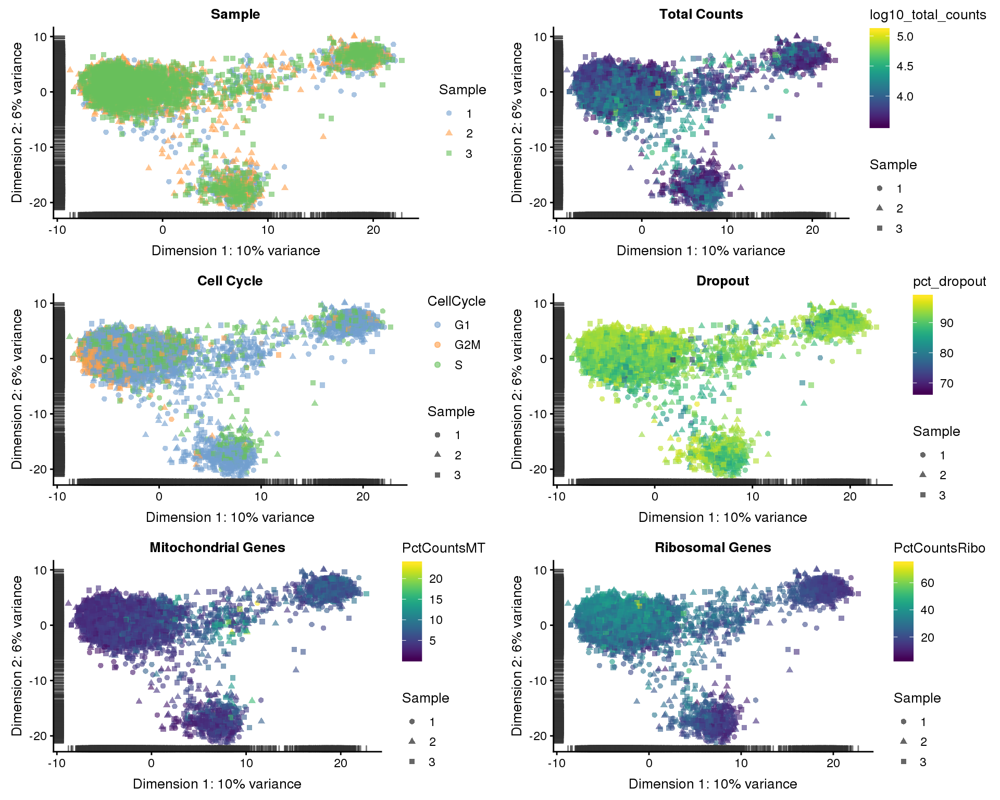
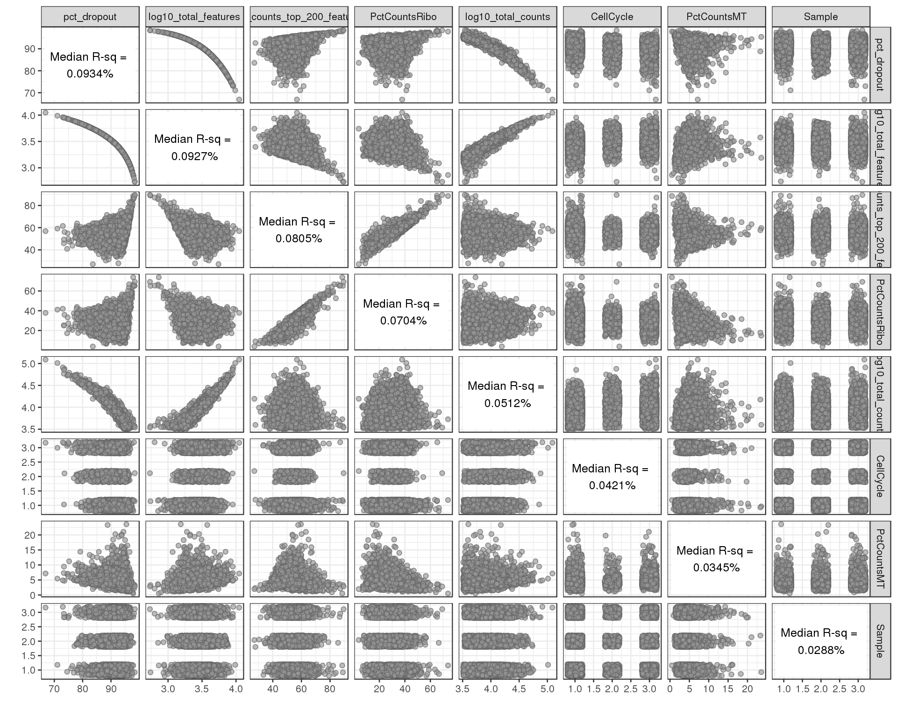
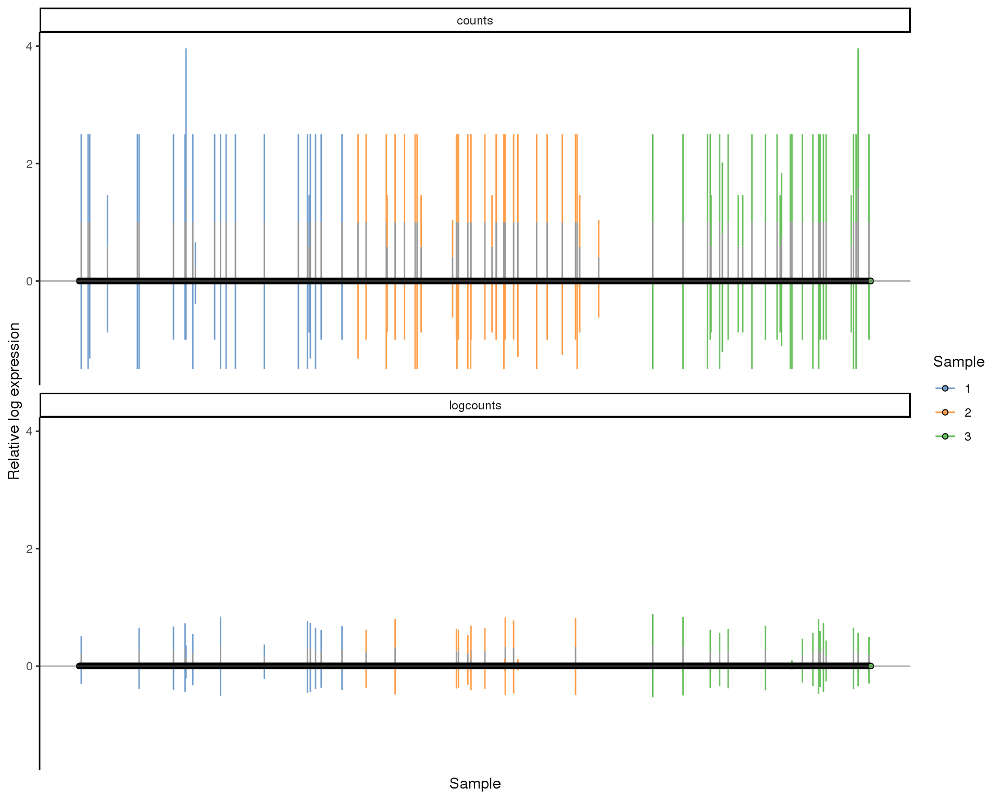
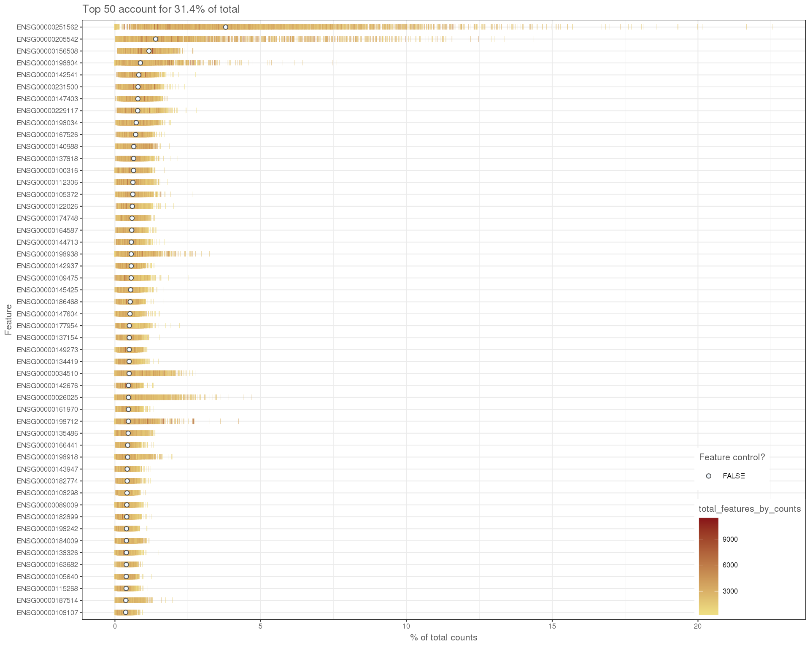
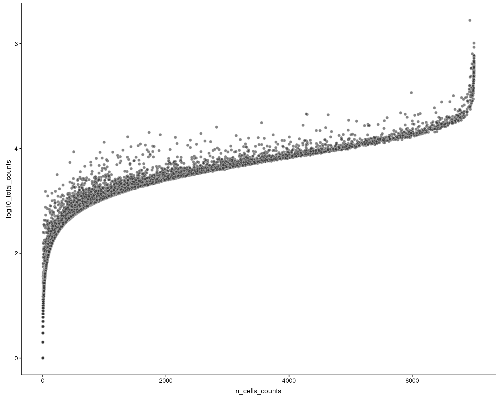
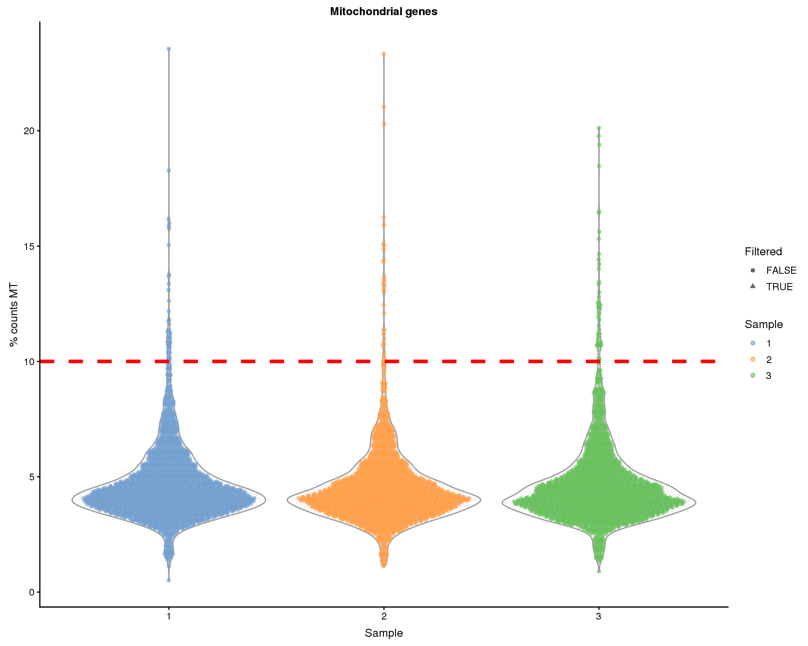
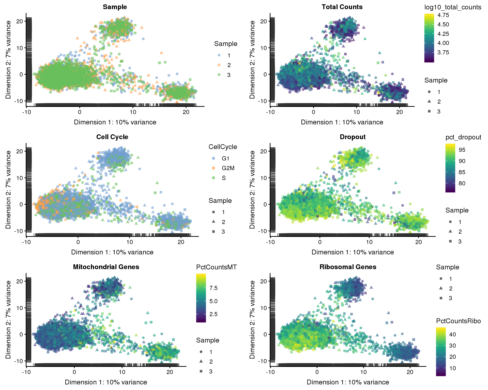
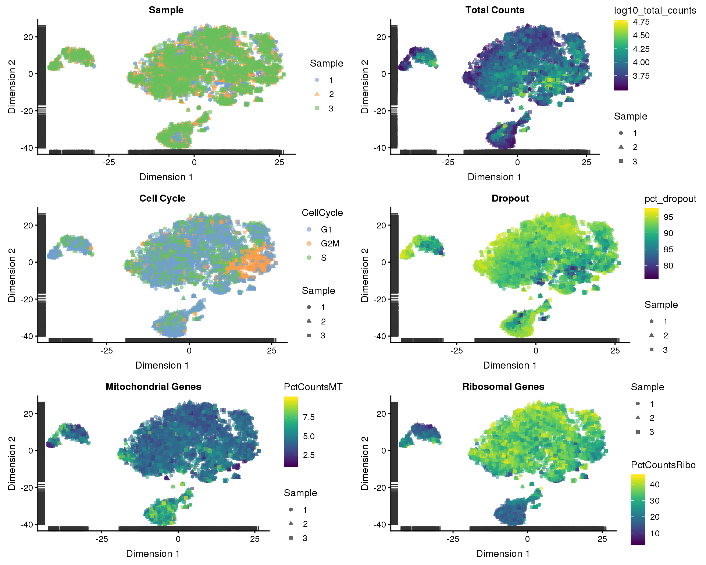

Organoid Batch 1 Quality Control
Last updated: 2018-09-13
workflowr checks: (Click a bullet for more information)-
✔ R Markdown file: up-to-date
Great! Since the R Markdown file has been committed to the Git repository, you know the exact version of the code that produced these results.
-
✔ Environment: empty
Great job! The global environment was empty. Objects defined in the global environment can affect the analysis in your R Markdown file in unknown ways. For reproduciblity it’s best to always run the code in an empty environment.
-
✔ Seed:
set.seed(20180730)The command
set.seed(20180730)was run prior to running the code in the R Markdown file. Setting a seed ensures that any results that rely on randomness, e.g. subsampling or permutations, are reproducible. -
✔ Session information: recorded
Great job! Recording the operating system, R version, and package versions is critical for reproducibility.
-
Great! You are using Git for version control. Tracking code development and connecting the code version to the results is critical for reproducibility. The version displayed above was the version of the Git repository at the time these results were generated.✔ Repository version: ad10b21
Note that you need to be careful to ensure that all relevant files for the analysis have been committed to Git prior to generating the results (you can usewflow_publishorwflow_git_commit). workflowr only checks the R Markdown file, but you know if there are other scripts or data files that it depends on. Below is the status of the Git repository when the results were generated:
Note that any generated files, e.g. HTML, png, CSS, etc., are not included in this status report because it is ok for generated content to have uncommitted changes.Ignored files: Ignored: .Rhistory Ignored: .Rproj.user/ Ignored: analysis/cache/ Ignored: data/processed.bak/ Ignored: packrat/lib-R/ Ignored: packrat/lib-ext/ Ignored: packrat/lib/ Ignored: packrat/src/ Untracked files: Untracked: analysis/cache.bak/ Unstaged changes: Modified: analysis/99_Methods.Rmd Staged changes: Deleted: output/README.md
Expand here to see past versions:
| File | Version | Author | Date | Message |
|---|---|---|---|---|
| html | ad10b21 | Luke Zappia | 2018-09-13 | Switch to GitHub |
| Rmd | 7755ac7 | Luke Zappia | 2018-08-15 | Add methods document |
| Rmd | e590658 | Luke Zappia | 2018-07-31 | Add hidden code |
| Rmd | d3e1660 | Luke Zappia | 2018-07-31 | Fix typo |
| Rmd | 0bd6015 | Luke Zappia | 2018-07-31 | Remove date |
| Rmd | 138edbe | Luke Zappia | 2018-07-31 | Fix figures |
| Rmd | bb63ce2 | Luke Zappia | 2018-07-31 | Add organoids batch 1 QC |
# scRNA-seq
library("scater")
# Matrices
library("Matrix")
# Plotting
library("cowplot")
# Presentation
library("glue")
library("knitr")
# Parallel
library("BiocParallel")
# Paths
library("here")
# Output
library("jsonlite")
# Tidyverse
library("tidyverse")source(here("R/load.R"))
source(here("R/output.R"))Introduction
In this document we are going to read in the first batch of our Organoid data, produce various quality control plots and remove any low-quality cells or uninformative genes.
sce <- load10xSCE(here("data/Organoid123"),
dataset = "Organoid123",
org = "human",
add.anno = TRUE,
calc.qc = TRUE,
calc.cpm = TRUE,
pct.mt = TRUE,
pct.ribo = TRUE,
cell.cycle = TRUE,
sparse = TRUE,
bpparam = MulticoreParam(workers = 10),
verbose = TRUE)
sce <- normalise(sce)
sce <- runPCA(sce)
sce <- runTSNE(sce)
write_rds(sce, here("data/processed/Organoid123_SCE_complete.Rds"))QC plots
By cell
Total counts
Violin plots of the library size (total counts) for each of the samples.
plotColData(sce, x = "Sample", y = "total_counts", colour_by = "Sample")
Expand here to see past versions of total-counts-1.png:
| Version | Author | Date |
|---|---|---|
| 138edbe | Luke Zappia | 2018-07-31 |
Number of features by library size
Relationship between the total counts for each cell and the number of expressed genes. We expect the number of genes to increase with the number of counts, hopefully reaching saturation.
plotColData(sce, x = "total_counts", y = "total_features", colour_by = "Sample")
Expand here to see past versions of count-features-1.png:
| Version | Author | Date |
|---|---|---|
| 138edbe | Luke Zappia | 2018-07-31 |
PCA
PCA plots coloured by different variables.
p1 <- plotPCA(sce, colour_by = "Sample", shape_by = "Sample") +
ggtitle("Sample")
p2 <- plotPCA(sce, colour_by = "log10_total_counts", shape_by = "Sample") +
ggtitle("Total Counts")
p3 <- plotPCA(sce, colour_by = "CellCycle", shape_by = "Sample") +
ggtitle("Cell Cycle")
p4 <- plotPCA(sce, colour_by = "pct_dropout", shape_by = "Sample") +
ggtitle("Dropout")
p5 <- plotPCA(sce, colour_by = "PctCountsMT", shape_by = "Sample") +
ggtitle("Mitochondrial Genes")
p6 <- plotPCA(sce, colour_by = "PctCountsRibo", shape_by = "Sample") +
ggtitle("Ribosomal Genes")
plot_grid(p1, p2, p3, p4, p5, p6, ncol = 2)
Expand here to see past versions of pca-1.png:
| Version | Author | Date |
|---|---|---|
| 138edbe | Luke Zappia | 2018-07-31 |
t-SNE
t-SNE plots coloured by different variables.
p1 <- plotTSNE(sce, colour_by = "Sample", shape_by = "Sample") +
ggtitle("Sample")
p2 <- plotTSNE(sce, colour_by = "log10_total_counts", shape_by = "Sample") +
ggtitle("Total Counts")
p3 <- plotTSNE(sce, colour_by = "CellCycle", shape_by = "Sample") +
ggtitle("Cell Cycle")
p4 <- plotTSNE(sce, colour_by = "pct_dropout", shape_by = "Sample") +
ggtitle("Dropout")
p5 <- plotTSNE(sce, colour_by = "PctCountsMT", shape_by = "Sample") +
ggtitle("Mitochondrial Genes")
p6 <- plotTSNE(sce, colour_by = "PctCountsRibo", shape_by = "Sample") +
ggtitle("Ribosomal Genes")
plot_grid(p1, p2, p3, p4, p5, p6, ncol = 2)
Expand here to see past versions of t-SNE-1.png:
| Version | Author | Date |
|---|---|---|
| 138edbe | Luke Zappia | 2018-07-31 |
Explantory variables
Plots of the variance explained by various variables.
exp.vars <- c("Sample", "CellCycle", "log10_total_counts",
"log10_total_features", "pct_dropout",
"pct_counts_top_200_features", "PctCountsMT", "PctCountsRibo")
all.zero <- rowSums(as.matrix(counts(sce))) == 0
plotExplanatoryVariables(sce[!all.zero, ], variables = exp.vars)
Expand here to see past versions of exp-vars-1.png:
| Version | Author | Date |
|---|---|---|
| 138edbe | Luke Zappia | 2018-07-31 |
Correlation between explanatory variables.
plotExplanatoryVariables(sce[!all.zero, ], variables = exp.vars,
method = "pairs")
Expand here to see past versions of exp-vars-pairs-1.png:
| Version | Author | Date |
|---|---|---|
| 138edbe | Luke Zappia | 2018-07-31 |
RLE
Relative Log Expression (RLE) plots. Ideally all boxes should be aligned and have the size size.
plotRLE(sce[!all.zero], list(logcounts = "logcounts", counts = "counts"),
c(TRUE, FALSE), colour_by = "Sample")
Expand here to see past versions of rle-1.png:
| Version | Author | Date |
|---|---|---|
| 138edbe | Luke Zappia | 2018-07-31 |
Mitochondrial genes
Looking at the effect of mitchondrial genes. We define mitochondrial genes as genes on the MT chromosome or with “mitochondrial” in the description.
plotColData(sce, x = "Sample", y = "PctCountsMT", colour_by = "Sample")
Expand here to see past versions of pct-mt-1.png:
| Version | Author | Date |
|---|---|---|
| 138edbe | Luke Zappia | 2018-07-31 |
Ribosomal genes
Looking at the effect of ribosomal genes. We define ribosomal genes as genes with “ribosom” in the description.
plotColData(sce, x = "Sample", y = "PctCountsRibo", colour = "Sample")
Expand here to see past versions of pct-ribo-1.png:
| Version | Author | Date |
|---|---|---|
| 138edbe | Luke Zappia | 2018-07-31 |
Housekeeping genes
Plots of housekeeping genes. We may want to use these for filtering as a proxy for the health of the cell.
actb.id <- filter(data.frame(rowData(sce)), feature_symbol == "ACTB")[1, 1]
gapdh.id <- filter(data.frame(rowData(sce)), feature_symbol == "GAPDH")[1, 1]
key <- c("ACTB", "GAPDH")
names(key) <- c(actb.id, gapdh.id)
plotExpression(sce, c(actb.id, gapdh.id), colour_by = "Sample") +
scale_x_discrete(labels = key)
Expand here to see past versions of hk-exprs-1.png:
| Version | Author | Date |
|---|---|---|
| 138edbe | Luke Zappia | 2018-07-31 |
By gene
High expression
plotHighestExprs(sce)
Expand here to see past versions of high-expression-1.png:
| Version | Author | Date |
|---|---|---|
| 138edbe | Luke Zappia | 2018-07-31 |
Expression frequency by mean
plotExprsFreqVsMean(sce)
Expand here to see past versions of mean-expression-freq-1.png:
| Version | Author | Date |
|---|---|---|
| 138edbe | Luke Zappia | 2018-07-31 |
Total counts by num cells expressed
plotRowData(sce, x = "n_cells_counts", y = "log10_total_counts")
Expand here to see past versions of gene-expression-1.png:
| Version | Author | Date |
|---|---|---|
| 138edbe | Luke Zappia | 2018-07-31 |
Filtering
colData(sce)$Filtered <- FALSETo begin with we have 7004 cells with 33694 features from the ENSEMBL annotation.
Cells
Quantification
Let’s consider how many reads are assigned to features. We can plot the total number of counts in each cell against the number of genes that are expressed.
Cells that have been filtered are shown as triangles.
thresh.h <- 8000
plotColData(sce, x = "total_counts", y = "total_features",
colour_by = "Sample", shape_by = "Filtered") +
geom_hline(yintercept = thresh.h, colour = "red", size = 1.5,
linetype = "dashed") +
xlab("Total counts") +
ylab("Total features") +
ggtitle("Quantification metrics")
Expand here to see past versions of quantification-1.png:
| Version | Author | Date |
|---|---|---|
| 138edbe | Luke Zappia | 2018-07-31 |
Cells that express many genes are potential multiplets (multiple cells captured in a single droplet). We will remove 11 cells with more than 8000 genes expressed.
colData(sce)$Filtered <- colData(sce)$Filtered |
colData(sce)$total_features > thresh.hWe now have 6993 cells.
Mitochondrial genes
Over-expression of mitochondrial genes can be an indication that a cell is stressed or damaged in some way. Let’s have a look at the percentage of counts that are assigned to mitchondrial genes.
thresh.h <- 10
plotColData(sce, x = "Sample", y = "PctCountsMT", colour_by = "Sample",
shape_by = "Filtered") +
geom_hline(yintercept = thresh.h, colour = "red", size = 1.5,
linetype = "dashed") +
xlab("Sample") +
ylab("% counts MT") +
ggtitle("Mitochondrial genes")
Expand here to see past versions of mt-1.png:
| Version | Author | Date |
|---|---|---|
| 138edbe | Luke Zappia | 2018-07-31 |
Some of the cells show high proportions of MT counts. We will remove 118 cells with greater than 10% MT counts.
colData(sce)$Filtered <- colData(sce)$Filtered |
colData(sce)$PctCountsMT > thresh.hThat leaves 6876 cells.
Ribsomal genes
We can do a similar thing for ribosomal gene expression.
thresh.h <- 45
plotColData(sce, x = "Sample", y = "PctCountsRibo", colour_by = "Sample",
shape_by = "Filtered") +
geom_hline(yintercept = thresh.h, colour = "red", size = 1.5,
linetype = "dashed") +
xlab("Sample") +
ylab("% counts ribosomal") +
ggtitle("Ribosomal genes")
Expand here to see past versions of ribosomal-1.png:
| Version | Author | Date |
|---|---|---|
| 138edbe | Luke Zappia | 2018-07-31 |
Some of the cells show high proportions of ribosomal counts. We will remove 183 cells with greater than 45% ribosomal counts.
colData(sce)$Filtered <- colData(sce)$Filtered |
colData(sce)$PctCountsRibo > thresh.hThat leaves 6693 cells.
Housekeeping
Similarly we can look at the expression of the “housekeeping” genes GAPDH and ACTB.
thresh.h <- 2
thresh.v <- 2
plotExpression(sce, gapdh.id, x = actb.id, colour_by = "Sample",
shape_by = "Filtered") +
geom_hline(yintercept = thresh.h, colour = "red", size = 1.5,
linetype = "dashed") +
geom_vline(xintercept = thresh.v, colour = "red", size = 1.5,
linetype = "dashed") +
xlab("ACTB") +
ylab("GAPDH") +
ggtitle("Housekeepking genes") +
theme(
strip.background = element_blank(),
strip.text.x = element_blank()
)
Expand here to see past versions of housekeeping-1.png:
| Version | Author | Date |
|---|---|---|
| 138edbe | Luke Zappia | 2018-07-31 |
We will remove cells where ACTB is expressed below 2 or GAPDH is expressed below 2. This removes 53 cells.
colData(sce)$Filtered <- colData(sce)$Filtered |
exprs(sce)[actb.id, ] < thresh.v |
exprs(sce)[gapdh.id, ] < thresh.hsce <- sce[, !colData(sce)$Filtered]After filtering we are left with 6649 cells.
Dimensionality reduction (filtered cells)
Now that we are relatively confident we have a set of good quality cells, let’s see what they look like in reduced dimensions.
PCA
sce <- runPCA(sce)
p1 <- plotPCA(sce, colour_by = "Sample", shape_by = "Sample") +
ggtitle("Sample")
p2 <- plotPCA(sce, colour_by = "log10_total_counts", shape_by = "Sample") +
ggtitle("Total Counts")
p3 <- plotPCA(sce, colour_by = "CellCycle", shape_by = "Sample") +
ggtitle("Cell Cycle")
p4 <- plotPCA(sce, colour_by = "pct_dropout", shape_by = "Sample") +
ggtitle("Dropout")
p5 <- plotPCA(sce, colour_by = "PctCountsMT", shape_by = "Sample") +
ggtitle("Mitochondrial Genes")
p6 <- plotPCA(sce, colour_by = "PctCountsRibo", shape_by = "Sample") +
ggtitle("Ribosomal Genes")
plot_grid(p1, p2, p3, p4, p5, p6, ncol = 2)
Expand here to see past versions of pca-filtered-cells-1.png:
| Version | Author | Date |
|---|---|---|
| 138edbe | Luke Zappia | 2018-07-31 |
t-SNE
sce <- runTSNE(sce)
p1 <- plotTSNE(sce, colour_by = "Sample", shape_by = "Sample") +
ggtitle("Sample")
p2 <- plotTSNE(sce, colour_by = "log10_total_counts", shape_by = "Sample") +
ggtitle("Total Counts")
p3 <- plotTSNE(sce, colour_by = "CellCycle", shape_by = "Sample") +
ggtitle("Cell Cycle")
p4 <- plotTSNE(sce, colour_by = "pct_dropout", shape_by = "Sample") +
ggtitle("Dropout")
p5 <- plotTSNE(sce, colour_by = "PctCountsMT", shape_by = "Sample") +
ggtitle("Mitochondrial Genes")
p6 <- plotTSNE(sce, colour_by = "PctCountsRibo", shape_by = "Sample") +
ggtitle("Ribosomal Genes")
plot_grid(p1, p2, p3, p4, p5, p6, ncol = 2)
Expand here to see past versions of tSNE-filtered-cells-1.png:
| Version | Author | Date |
|---|---|---|
| 138edbe | Luke Zappia | 2018-07-31 |
Genes
Expression
Some of the features we would never expect to see expressed in an RNA-seq experiment. Before doing anything else I am going to remove the features that have less than two counts across all cells.
keep <- rowSums(counts(sce)) > 1
sce <- sce[keep]This removes 10784 genes and leaves us with 22910.
We will also going remove genes that are expressed in less than two individual cells.
keep <- rowSums(counts(sce) != 0) > 1
sce <- sce[keep, ]This removes 35 genes and leaves us with 22875.
HGNC genes
We are also going to filter out any genes that don’t have HGNC symbols. These are mostly pseudogenes and are unlikely to be informative.
keep <- !(rowData(sce)$hgnc_symbol == "") &
!(is.na(rowData(sce)$hgnc_symbol))
sce <- sce[keep, ]This removes 4489 genes and leaves us with 18386.
dups <- which(duplicated(rowData(sce)$feature_symbol))There are 1 gene(s) with duplicate HGNC symbol names. For these genes we will use an alternative symbol name. Once we have done this we can rename the features using feature symbols instead of ENSEMBL IDs which will make interpreting results easier.
rowData(sce)[dups, "feature_symbol"] <- rowData(sce)[dups, "symbol"]
rownames(sce) <- rowData(sce)$feature_symbolDimensionality reduction (filtered genes)
Let’s see what our final dataset looks like in reduced dimensions.
PCA
sce <- runPCA(sce)
p1 <- plotPCA(sce, colour_by = "Sample", shape_by = "Sample") +
ggtitle("Sample")
p2 <- plotPCA(sce, colour_by = "log10_total_counts", shape_by = "Sample") +
ggtitle("Total Counts")
p3 <- plotPCA(sce, colour_by = "CellCycle", shape_by = "Sample") +
ggtitle("Cell Cycle")
p4 <- plotPCA(sce, colour_by = "pct_dropout", shape_by = "Sample") +
ggtitle("Dropout")
p5 <- plotPCA(sce, colour_by = "PctCountsMT", shape_by = "Sample") +
ggtitle("Mitochondrial Genes")
p6 <- plotPCA(sce, colour_by = "PctCountsRibo", shape_by = "Sample") +
ggtitle("Ribosomal Genes")
plot_grid(p1, p2, p3, p4, p5, p6, ncol = 2)
Expand here to see past versions of pca-filtered-genes-1.png:
| Version | Author | Date |
|---|---|---|
| 138edbe | Luke Zappia | 2018-07-31 |
t-SNE
sce <- runTSNE(sce)
p1 <- plotTSNE(sce, colour_by = "Sample", shape_by = "Sample") +
ggtitle("Sample")
p2 <- plotTSNE(sce, colour_by = "log10_total_counts", shape_by = "Sample") +
ggtitle("Total Counts")
p3 <- plotTSNE(sce, colour_by = "CellCycle", shape_by = "Sample") +
ggtitle("Cell Cycle")
p4 <- plotTSNE(sce, colour_by = "pct_dropout", shape_by = "Sample") +
ggtitle("Dropout")
p5 <- plotTSNE(sce, colour_by = "PctCountsMT", shape_by = "Sample") +
ggtitle("Mitochondrial Genes")
p6 <- plotTSNE(sce, colour_by = "PctCountsRibo", shape_by = "Sample") +
ggtitle("Ribosomal Genes")
plot_grid(p1, p2, p3, p4, p5, p6, ncol = 2)
Expand here to see past versions of tSNE-filtered-genes-1.png:
| Version | Author | Date |
|---|---|---|
| 138edbe | Luke Zappia | 2018-07-31 |
We now have a high-quality dataset for our analysis with 18386 genes and 6649 cells. A median of 2738 genes are expressed in each cell.
Summary
Parameters
This table describes parameters used and set in this document.
params <- toJSON(list(
list(
Parameter = "total_features",
Value = 8000,
Description = "Maximum threshold for total features expressed"
),
list(
Parameter = "mt_counts",
Value = 10,
Description = "Maximum threshold for percentage counts mitochondrial"
),
list(
Parameter = "ribo_counts",
Value = 45,
Description = "Maximum threshold for percentage counts ribosomal"
),
list(
Parameter = "ACTB_expr",
Value = 2,
Description = "Minimum threshold for ACTB expression"
),
list(
Parameter = "GAPDH_expr",
Value = 2,
Description = "Minimum threshold for GAPDH expression"
),
list(
Parameter = "n_cells",
Value = ncol(sce),
Description = "Number of cells in the filtered dataset"
),
list(
Parameter = "n_genes",
Value = nrow(sce),
Description = "Number of genes in the filtered dataset"
),
list(
Parameter = "median_genes",
Value = median(colSums(counts(sce) != 0)),
Description = paste("Median number of expressed genes per cell in the",
"filtered dataset")
)
), pretty = TRUE)
kable(fromJSON(params))| Parameter | Value | Description |
|---|---|---|
| total_features | 8000 | Maximum threshold for total features expressed |
| mt_counts | 10 | Maximum threshold for percentage counts mitochondrial |
| ribo_counts | 45 | Maximum threshold for percentage counts ribosomal |
| ACTB_expr | 2 | Minimum threshold for ACTB expression |
| GAPDH_expr | 2 | Minimum threshold for GAPDH expression |
| n_cells | 6649 | Number of cells in the filtered dataset |
| n_genes | 18386 | Number of genes in the filtered dataset |
| median_genes | 2738 | Median number of expressed genes per cell in the filtered dataset |
Output files
This table describes the output files produced by this document. Right click and Save Link As… to download the results.
write_rds(sce, here("data/processed/Organoid123_SCE_filtered.Rds"))dir.create(here("output", DOCNAME), showWarnings = FALSE)
write_lines(params, here("output", DOCNAME, "parameters.json"))
kable(data.frame(
File = c(
glue("[parameters.json]({getDownloadURL('parameters.json', DOCNAME)})")
),
Description = c(
"Parameters set and used in this analysis"
)
))| File | Description |
|---|---|
| parameters.json | Parameters set and used in this analysis |
Session information
devtools::session_info() setting value
version R version 3.5.0 (2018-04-23)
system x86_64, linux-gnu
ui X11
language (EN)
collate en_US.UTF-8
tz Australia/Melbourne
date 2018-07-31
package * version date
AnnotationDbi 1.42.1 2018-07-30
assertthat 0.2.0 2017-04-11
backports 1.1.2 2017-12-13
base * 3.5.0 2018-06-18
beeswarm 0.2.3 2016-04-25
bindr 0.1.1 2018-03-13
bindrcpp * 0.2.2 2018-03-29
Biobase * 2.40.0 2018-07-30
BiocGenerics * 0.26.0 2018-07-30
BiocParallel * 1.14.2 2018-07-08
biomaRt 2.36.1 2018-07-30
bit 1.1-14 2018-05-29
bit64 0.9-7 2017-05-08
bitops 1.0-6 2013-08-17
blob 1.1.1 2018-03-25
broom 0.5.0 2018-07-17
cellranger 1.1.0 2016-07-27
cli 1.0.0 2017-11-05
codetools 0.2-15 2016-10-05
colorspace 1.3-2 2016-12-14
compiler 3.5.0 2018-06-18
cowplot * 0.9.3 2018-07-15
crayon 1.3.4 2017-09-16
curl 3.2 2018-03-28
data.table 1.11.4 2018-05-27
datasets * 3.5.0 2018-06-18
DBI 1.0.0 2018-05-02
DelayedArray * 0.6.2 2018-07-23
DelayedMatrixStats 1.2.0 2018-07-30
devtools 1.13.6 2018-06-27
digest 0.6.15 2018-01-28
dplyr * 0.7.6 2018-06-29
DropletUtils 1.0.2 2018-07-30
DT 0.4 2018-01-30
dynamicTreeCut 1.63-1 2016-03-11
edgeR 3.22.3 2018-06-21
evaluate 0.10.1 2017-06-24
FNN 1.1 2013-07-31
forcats * 0.3.0 2018-02-19
GenomeInfoDb * 1.16.0 2018-07-30
GenomeInfoDbData 1.1.0 2018-07-30
GenomicRanges * 1.32.6 2018-07-20
ggbeeswarm 0.6.0 2017-08-07
ggplot2 * 3.0.0 2018-07-03
git2r 0.21.0 2018-01-04
glue 1.3.0 2018-07-17
graphics * 3.5.0 2018-06-18
grDevices * 3.5.0 2018-06-18
grid 3.5.0 2018-06-18
gridExtra 2.3 2017-09-09
gtable 0.2.0 2016-02-26
haven 1.1.2 2018-06-27
here * 0.1 2017-05-28
hms 0.4.2 2018-03-10
htmltools 0.3.6 2017-04-28
htmlwidgets 1.2 2018-04-19
httpuv 1.4.5 2018-07-19
httr 1.3.1 2017-08-20
igraph 1.2.2 2018-07-27
IRanges * 2.14.10 2018-07-30
jsonlite 1.5 2017-06-01
knitr 1.20 2018-02-20
labeling 0.3 2014-08-23
later 0.7.3 2018-06-08
lattice 0.20-35 2017-03-25
lazyeval 0.2.1 2017-10-29
limma 3.36.2 2018-06-21
locfit 1.5-9.1 2013-04-20
lubridate 1.7.4 2018-04-11
magrittr 1.5 2014-11-22
Matrix * 1.2-14 2018-04-09
matrixStats * 0.54.0 2018-07-23
memoise 1.1.0 2017-04-21
methods * 3.5.0 2018-06-18
mgcv 1.8-24 2018-06-18
mime 0.5 2016-07-07
modelr 0.1.2 2018-05-11
munsell 0.5.0 2018-06-12
nlme 3.1-137 2018-04-07
parallel * 3.5.0 2018-06-18
pillar 1.3.0 2018-07-14
pkgconfig 2.0.1 2017-03-21
plyr 1.8.4 2016-06-08
prettyunits 1.0.2 2015-07-13
progress 1.2.0 2018-06-14
promises 1.0.1 2018-04-13
purrr * 0.2.5 2018-05-29
R.methodsS3 1.7.1 2016-02-16
R.oo 1.22.0 2018-04-22
R.utils 2.6.0 2017-11-05
R6 2.2.2 2017-06-17
Rcpp 0.12.18 2018-07-23
RCurl 1.95-4.11 2018-07-15
readr * 1.1.1 2017-05-16
readxl 1.1.0 2018-04-20
reshape2 1.4.3 2017-12-11
rhdf5 2.24.0 2018-07-30
Rhdf5lib 1.2.1 2018-07-30
rjson 0.2.20 2018-06-08
rlang 0.2.1 2018-05-30
rmarkdown 1.10.2 2018-07-30
rprojroot 1.3-2 2018-01-03
RSQLite 2.1.1 2018-05-06
rstudioapi 0.7 2017-09-07
Rtsne 0.13 2017-04-14
rvest 0.3.2 2016-06-17
S4Vectors * 0.18.3 2018-07-30
scales 0.5.0 2017-08-24
scater * 1.8.2 2018-07-27
scran 1.8.2 2018-07-30
shiny 1.1.0 2018-05-17
shinydashboard 0.7.0 2018-03-21
SingleCellExperiment * 1.2.0 2018-07-30
statmod 1.4.30 2017-06-18
stats * 3.5.0 2018-06-18
stats4 * 3.5.0 2018-06-18
stringi 1.2.4 2018-07-20
stringr * 1.3.1 2018-05-10
SummarizedExperiment * 1.10.1 2018-07-30
tibble * 1.4.2 2018-01-22
tidyr * 0.8.1 2018-05-18
tidyselect 0.2.4 2018-02-26
tidyverse * 1.2.1 2017-11-14
tools 3.5.0 2018-06-18
tximport 1.8.0 2018-07-30
utils * 3.5.0 2018-06-18
vipor 0.4.5 2017-03-22
viridis 0.5.1 2018-03-29
viridisLite 0.3.0 2018-02-01
whisker 0.3-2 2013-04-28
withr 2.1.2 2018-03-15
workflowr 1.1.1 2018-07-06
XML 3.98-1.12 2018-07-15
xml2 1.2.0 2018-01-24
xtable 1.8-2 2016-02-05
XVector 0.20.0 2018-07-30
yaml 2.2.0 2018-07-25
zlibbioc 1.26.0 2018-07-30
source
Bioconductor
CRAN (R 3.5.0)
CRAN (R 3.5.0)
local
CRAN (R 3.5.0)
cran (@0.1.1)
cran (@0.2.2)
Bioconductor
Bioconductor
Bioconductor
Bioconductor
CRAN (R 3.5.0)
CRAN (R 3.5.0)
cran (@1.0-6)
CRAN (R 3.5.0)
cran (@0.5.0)
CRAN (R 3.5.0)
CRAN (R 3.5.0)
CRAN (R 3.5.0)
cran (@1.3-2)
local
cran (@0.9.3)
CRAN (R 3.5.0)
CRAN (R 3.5.0)
cran (@1.11.4)
local
CRAN (R 3.5.0)
Bioconductor
Bioconductor
CRAN (R 3.5.0)
CRAN (R 3.5.0)
cran (@0.7.6)
Bioconductor
CRAN (R 3.5.0)
CRAN (R 3.5.0)
Bioconductor
CRAN (R 3.5.0)
cran (@1.1)
CRAN (R 3.5.0)
Bioconductor
Bioconductor
Bioconductor
CRAN (R 3.5.0)
cran (@3.0.0)
CRAN (R 3.5.0)
cran (@1.3.0)
local
local
local
cran (@2.3)
cran (@0.2.0)
CRAN (R 3.5.0)
CRAN (R 3.5.0)
CRAN (R 3.5.0)
CRAN (R 3.5.0)
cran (@1.2)
cran (@1.4.5)
CRAN (R 3.5.0)
cran (@1.2.2)
Bioconductor
CRAN (R 3.5.0)
CRAN (R 3.5.0)
cran (@0.3)
cran (@0.7.3)
CRAN (R 3.5.0)
cran (@0.2.1)
Bioconductor
CRAN (R 3.5.0)
cran (@1.7.4)
CRAN (R 3.5.0)
CRAN (R 3.5.0)
CRAN (R 3.5.0)
CRAN (R 3.5.0)
local
CRAN (R 3.5.0)
CRAN (R 3.5.0)
CRAN (R 3.5.0)
cran (@0.5.0)
CRAN (R 3.5.0)
local
cran (@1.3.0)
cran (@2.0.1)
cran (@1.8.4)
CRAN (R 3.5.0)
CRAN (R 3.5.0)
cran (@1.0.1)
cran (@0.2.5)
CRAN (R 3.5.0)
CRAN (R 3.5.0)
CRAN (R 3.5.0)
CRAN (R 3.5.0)
cran (@0.12.18)
CRAN (R 3.5.0)
CRAN (R 3.5.0)
CRAN (R 3.5.0)
cran (@1.4.3)
Bioconductor
Bioconductor
CRAN (R 3.5.0)
CRAN (R 3.5.0)
Github (rstudio/rmarkdown@18207b9)
CRAN (R 3.5.0)
CRAN (R 3.5.0)
CRAN (R 3.5.0)
cran (@0.13)
CRAN (R 3.5.0)
Bioconductor
cran (@0.5.0)
Bioconductor
Bioconductor
cran (@1.1.0)
CRAN (R 3.5.0)
Bioconductor
CRAN (R 3.5.0)
local
local
cran (@1.2.4)
CRAN (R 3.5.0)
Bioconductor
cran (@1.4.2)
cran (@0.8.1)
cran (@0.2.4)
CRAN (R 3.5.0)
local
Bioconductor
local
CRAN (R 3.5.0)
cran (@0.5.1)
cran (@0.3.0)
CRAN (R 3.5.0)
CRAN (R 3.5.0)
CRAN (R 3.5.0)
CRAN (R 3.5.0)
CRAN (R 3.5.0)
cran (@1.8-2)
Bioconductor
cran (@2.2.0)
Bioconductor This reproducible R Markdown analysis was created with workflowr 1.1.1